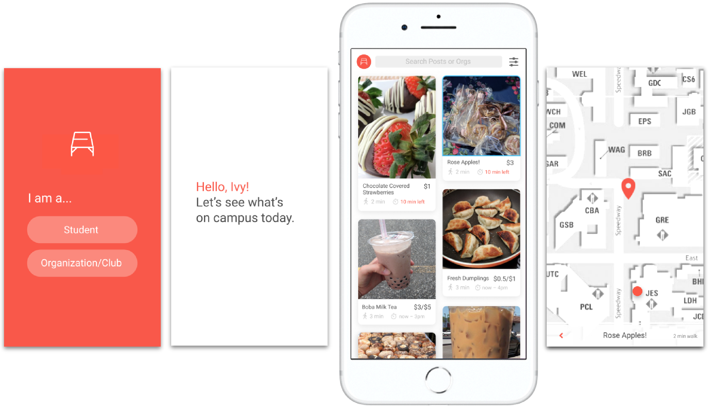

Previous

Next
While there is a growing number of people who claim that bring sustainable is important, many individuals do not know where to start.
The Happy Planet Project is a website to teach people about how to be more individually sustainable. Users can take a quiz about their lifestyle and habits and get personalized results on which areas they can improve on from an environmental perspective. To view my responsive web prototype, visit my Github repo.
Many organizations try to spread awareness about environmental issues using the "dooms day" approach that incorporate extreme images (ie. beaches covered in trash). However, this approach tends to make people feel overwhelmed and hopeless, instead of take action.
Happy Planet Project want to use the best methods to encourage actionable change by teaching out users how to more individually sustainable, such as: including narratives that are inspirational, that make people feel part of something great (incorporate community), and earn trust by being a reliable source of facts and evidence.
The goal of Happy Planet Project is to spread awareness of the importance of individual sustainability and teach users not only about sustainability, but to take action. To achieve these goals, I created three design requirements:
One of the biggest challenges of this project was to create the large amount of content this project would require to be successful. To do so, I did extensive research on tangible, sustainable habits from reputable environmental websites. I organized these tips and goals into multiple categories.
I decided a short quiz would be the best way to obtain specific environmental habits from the user, because it would present accurate tips for each user giving them a more personal experience. The user would then be presented with personalized results - categories of sustainability that they can improve on. This will allow the user to still have the freedom to choose individual goals, while also having recommendations to help guide them.
Users can also add specific goals to their board, allowing them the freedom to choose which goals they want to focus on. To further motivate them to take actionable steps in reaching their goals, users can also get reminders or share their goals on social media.
For the following wireframes, I created multiple designs of some pages to test with users before creating the mockups. I also designed for a responsive website, since most websites are accessed by mobile devices.
For the branding, I wanted to focus on natural colors to represent sustainability and the planet. I chose blue to represent the ocean. I also wanted to include an additional five colors for the five categories. Using these distinct colors would not only help differentiate each of the categories, but also the goals that belong to each of these categories.
Before creating the web prototype, I interviewed a possible user to walk through the high-fidelity mockup to find possible pain points with my original design.
To conduct this evaluation, I asked the user to do a walk through and speak out loud while working with the mockup. The mockup was presented in screenshots to the user on a laptop and I pulled up the appropriate screen based on what the user navigated to.
During the walkthrough, there were 3 major issues the user encountered:
Categorical content is rarely interacted with, and users who do interact with it tend to get confused on where to go next. On the home page, the user clicked the "Take Quiz" button as expected. While this was the intended action fot the flow of the website, I realized the categories below are never visited because the user did not notice them. Additionally, if they were to scroll down, it would disrupt the flow of the website.
Solution 1: To combat this design issue, I decided to take out the bottom portion completely. Having a "Categories" page does not add to the overall design and functionality fo the website, and ultimately confus and disrupt the user's flow.
Solution 2: Remove the button on the home page that allows users to scroll down to remove any possible confusion in terms of navigation.
Users were confused on how to add to their eco-board. On the results page, the user did not understand that they could add goals to their eco-board. The user also did not scroll over the button where the tool tip would have been revealed.
Solution 1: The design needed to be more clear that the user can add goals to their eco-board, so I changed the "+" on the button to informative text that read "Add to Eco-Board." Increasing the size and adding informative text, gives the user more clarity about what the button does and hint at the next steps that are ahead.
Users were confused on how to get to their eco-board On the results page, the user had trouble getting to their eco-board. It wasn't clear which button to press, and there was slight confusion on where to go after this page.
Solution 1: To help guide the user on the next action, I removed the smaller "browe more [category] goals" and moved the "My Eco-Board" button to the bottom of the page next to "Browse All Goals."
Solution 2: I changed the wording "Browse All Goals" to "Browse More Goals" hinting to the user that there are more goals available. "All goals" seemed a bit vague to the user.
The focus of this project was creating a high fidelity prototype for testing. I coded the website with Bootstrap and HTML, CSS, and JavaScript. To view my final web prototype, visit my GitHub repo.
Most designs were built out if possible. Design iterations were based on user testing results. Most major designs that were not built were based on technical limitations.
I really enjoyed this project because I was able to build out my design as a working prototype and see it come to life! Looking back, since this project was more focused on learning how to create interactive prototypes, my user research was not as thorough at the beginning of my design process as it could have been.
I think the most important takeaway, is how beneficial it is to work with a team. I'm glad I got to have this experience of working solo on a project, but I realized how much I enjoy working with other people. I think the overall project would have benefited from different ideas and unique perspective that comes with collaborating within a team, specifically with the branding aspect of this project.